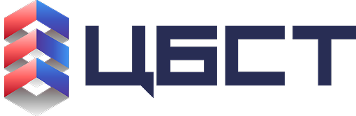

UAV radio-suppression (EW) station family made by OOO «Nauchno-proizvodstvennoe obedinenie «Kilovatt»», a company under sanctions. It is sold online and through dealers and handed to military units by a foundation that works with TsBST.
2held by Fond «Nasha Pravda» on 31.12.2024, by its audited accounts15
8handovers reported, 08.07.2024 – 09.06.2025
Minimums from documents. They may overlap, so they are not added up.
A document shows it
Reported: the party's own word or the press
Not documented
Numbers refer to the sources at the end.
Select a picture to see it full size with its source.
TsBST and its events
Hub

ANO «TsBST»АНО «ЦБСТ»Centre for Unmanned Systems & Technologies
Kursk Regional Clinical Hospital and ambulance stationRussian«Курская областная клиническая больница и станция скорой помощи»with United Russia, MGER18
servicemen of groups “Center” and “Dnepr”Russian«военнослужащие группировок „Центр“ и „Днепр“»with United Russia7
heads of municipal districts of Kherson Oblast, for crews restoring the power supplyRussian«главы муниципальных округов Херсонской области, для бригад, восстанавливающих электроснабжение»19
servicemen of group “South”Russian«военнослужащие группировки „ЮГ“»with United Russia20
participants in the “special operation” (a convoy from Yegoryevsk)Russian«участники спецоперации (конвой из Егорьевска)»with «Boevoe Bratstvo»21
OOO «Nauchno-proizvodstvennoe obedinenie «Kilovatt»»RussianООО «Научно-производственное объединение «Киловатт»», registered in Lipetsk on 2024-07-2223. Revenue in 2025: ₽1.16bn6.
What this does not show
No document records OOO «Nauchno-proizvodstvennoe obedinenie «Kilovatt»» as a formal member of a TsBST programme. Its link to TsBST rests on the posts and statements cited on its card.
Fond «Nasha Pravda»'s accounts show it bought «Kapyushon» for transfer to units, but name no seller. Who sold them to it is not documented.
The 8 handovers are Fond «Nasha Pravda»'s own reports. None is confirmed by the receiving unit or an independent source, and the post date is not always the handover date.
Every company, listing, contract and handover here comes from an archived document. Listings
and handovers are as of the dates shown; 2 listings and 8 handovers are on file.
Sources
US (OFAC SDN) sanctions list, full download, 02.10.2026.
EU sanctions list, full download, 02.10.2026.
UK (FCDO) sanctions list, full download, 02.10.2026.
Swiss (SECO) sanctions list, full download, 02.10.2026.